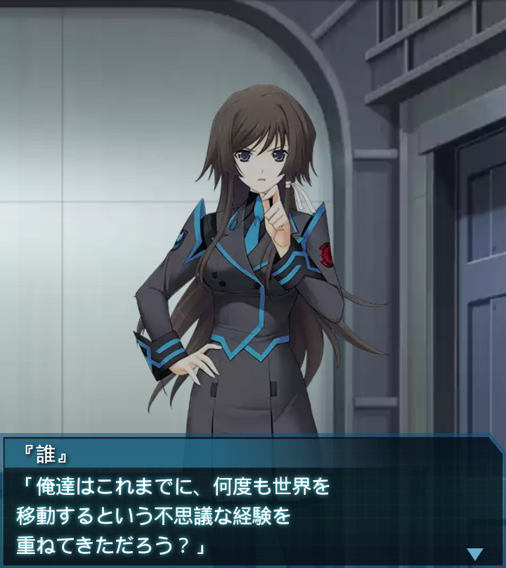
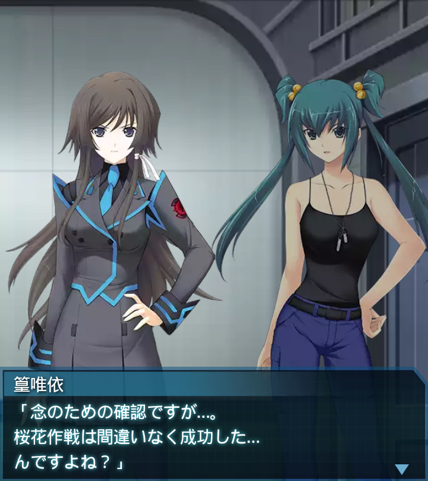

『誰』
「…以上の事から、香月司令はオリジナルハイヴへの再突入を決断
し、その任務を我々が拝命した」

篁唯依
「大尉の脳裏に突然浮かんだ、世界融合の原因と思しきビジョン…
ですか」
『誰』
「そうだ。俺は単なる思いつきとは思えない。記憶は曖昧だけど、多分
真実なんだと思ったんだ」

『誰』
「俺達はこれまでに、何度も世界を移動するという不思議な経験を
重ねてきただろう？」
『誰』
「そしてその時の記憶は今でも鮮明に残っている。だが、そんな経験は
俺達だけのものだろうか？」
崔亦菲
「別世界に住む私達も同じような経験をしている可能性は十分に
あるわよね」
篁唯依
「つまり大尉は、別世界の自分の記憶が他の世界の自分と共有されて
いると言いたいのですね？」
『誰』
「ああ。香月司令も夢の一部は共有された記憶である可能性を指摘して
いる。そして今回は――」
『誰』
「オリジナルハイヴが再活性化しているという観測結果もあり、俺の
言葉が決断を後押しした…」
篁唯依
「それにしても冒険よね。その仮説だけで今の疲弊した人類を喀什に
再突入させようってんだから」
『誰』
「あの人は元来物理学者だ。司令の提唱する因果律量子論は、世界の
現状と完全に合致するらしいぞ」

崔亦菲
「ふうん…私には正直難しい話ね。でも単なる思いつきでないのなら
いいわ。無駄死には嫌だもの」

篁唯依
「念のための確認ですが…。桜花作戦は間違いなく成功した…
んですよね？」
『誰』
「ああ、それは間違いない。常識的に考えれば、再活性化は
あり得ない」
篁唯依
「委細承知しました。その大役、必ずまっとうして見せます」
崔亦菲
「そうね、腕が鳴るわ」『誰』
「決行日等の詳細は決まり次第伝達する。それまで俺達は野良ＢＥＴＡ
の掃討だ」
『誰』
「ＨＳＳＴに万が一の事が起きないよう、心して任務にあたってくれ」
「「了解！！」」